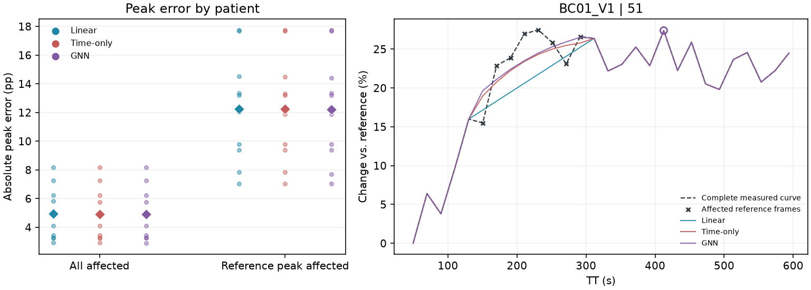

本轮做的是普通区域分析。图中的每个节点是一条区域曲线，目前没有使用病灶标注。
每种方法使用相同的局部缺失点。分别取完整曲线和补全曲线在现有采样时刻的最大值，再算两者相差多少个百分点。比如完整峰值为 +70%，补完算出 +62%，差 8 个百分点。这里评估的是相对首帧信号的采样峰高。
第一行纳入所有在原掩码下受影响的曲线。第二行只保留参考峰值落在受影响帧里的曲线，方便看真正可能漏掉峰值的情况。若多个时刻并列峰值，只有全部受影响才进第二行。先平均同次访视的入选曲线，再平均同一患者的访视，最后对患者等权。
| 分析范围 | 患者数 | 线性峰值误差 | 只看本区域 | GNN | GNN − 线性 |
|---|---|---|---|---|---|
| 所有受缺失影响的曲线 | 10 | 4.931 | 4.925 | 4.918 | -0.013 |
| 参考峰值所在的帧受缺失影响 | 10 | 12.257 | 12.240 | 12.216 | -0.041 |

这些结果沿用 05 已查看过的同一批留出患者，是针对本批数据和人工缺失方式的探索性分析。医学解释需要经核验的病灶标注和独立验证。